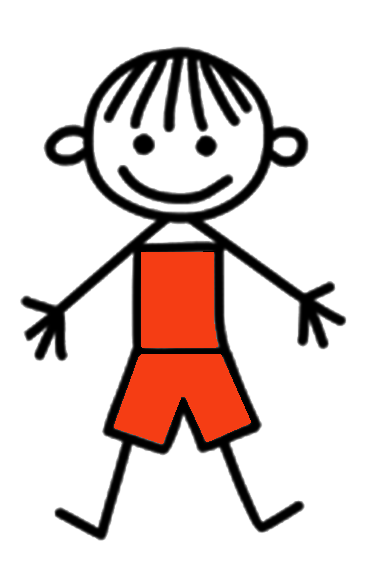
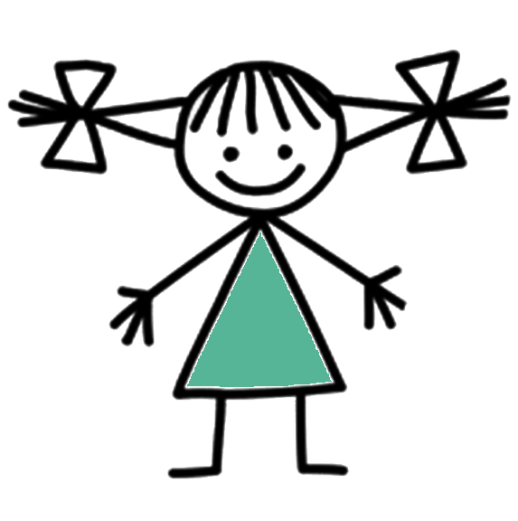

В нашем сознании годами формировались и передавались из поколения в поколение различные предрассудки в подходе к воспитанию мальчиков и девочек. И, конечно, это не могло не отразиться на нашем стиле воспитания.
Сегодня я предлагаю вам пройти небольшой тест. С помощью которого каждый родитель или педагог может проверить, насколько его представления о воспитании совпадают с последними исследованиями современной психологии.
После каждого вопроса выбирайте ответ. После этого придет мой комментарий к ответу.
 
Я хочу поблагодарить каждого, кто прошел данное тестирование!
Ответив на вопросы теста, вы определили, насколько ваши представления о воспитании, психологии детей совпадают с мнением психологов. Вероятно, каждый убежден, что прав именно он.
Но даже если вы ответили не на все задания так, как было задумано мной, каждая мысль и рассуждение, которые вы сделали, останутся с вами как новый прожитый опыт, небольшое дополнение ваших взглядов, действий, привычек.
Как маленькое семечко
Сперва оно скрыто под землей. И со стороны не заметно, что оно уже начало прорастать, пустило корни.
Люди вокруг могут говорить, что все бесполезно, раз результат труда не виден сразу. Но вы уже чувствуете, что эти семена прорастают. И можете продолжить поливать их, пока они не станут прекрасными деревьями.
Сначала изменения происходят внутри и не видны другим. Но именно в этих крошечных семенах - будущее, в котором вы сможете наслаждаться плодами.
Не переставайте верить в себя и в своих детей, двигаться к новым важным для вас изменениям. Бережно растите из семян ваши деревья, которые уже никто не сможет сломать или сокрушить.